Todas as peças
Encontre o kit ideal para o seu próximo caminho.
MAIS VENDIDO
G&D / LINHA CARRO
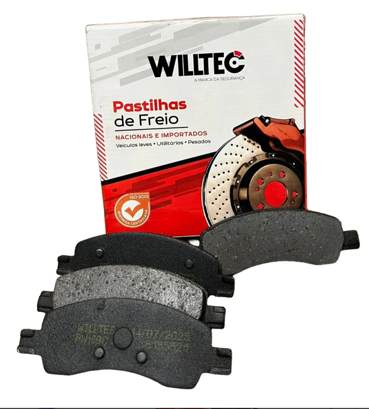
Kit Freio Dianteiro - Fiat Argo Cronos Pulse - modelo 2022 a 2026
R$ 83,55
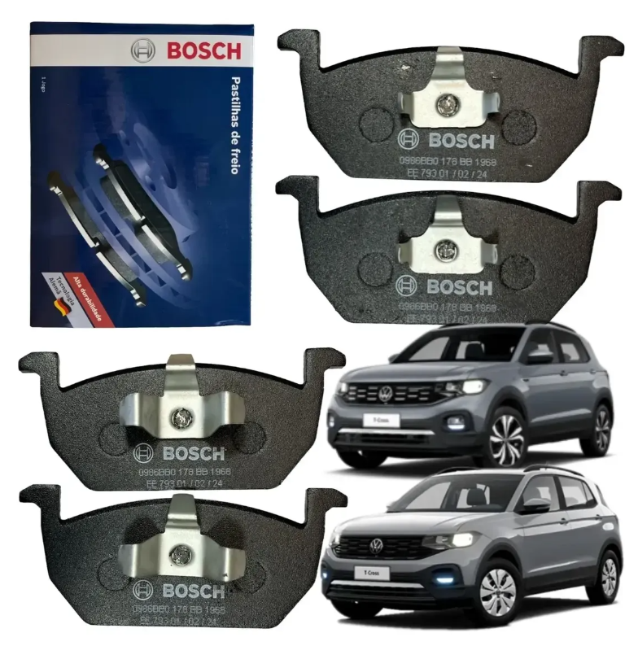
Kit Freio Dianteiro - Vw T-cross Nivus Virtus Polo Tsi- modelo 2020 a 2025
R$ 179,90
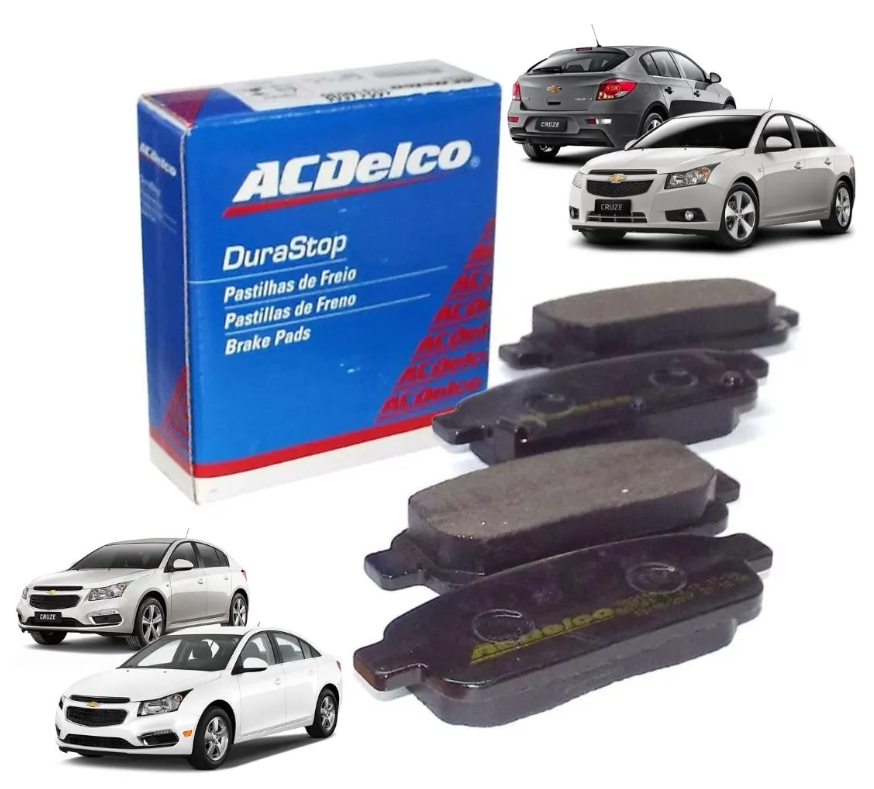
Kit Freio Dianteiro Traseiro Cruze 1.8 - modelo 2012 a 2016
R$ 182,90
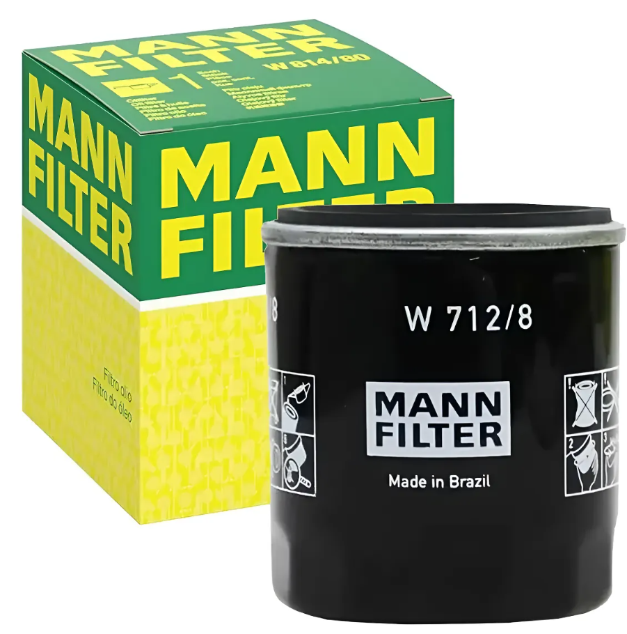
Filtro de óleo Mann Vw Polo Nivus Virtus Up Taos Tcross Tera
R$ 29,99
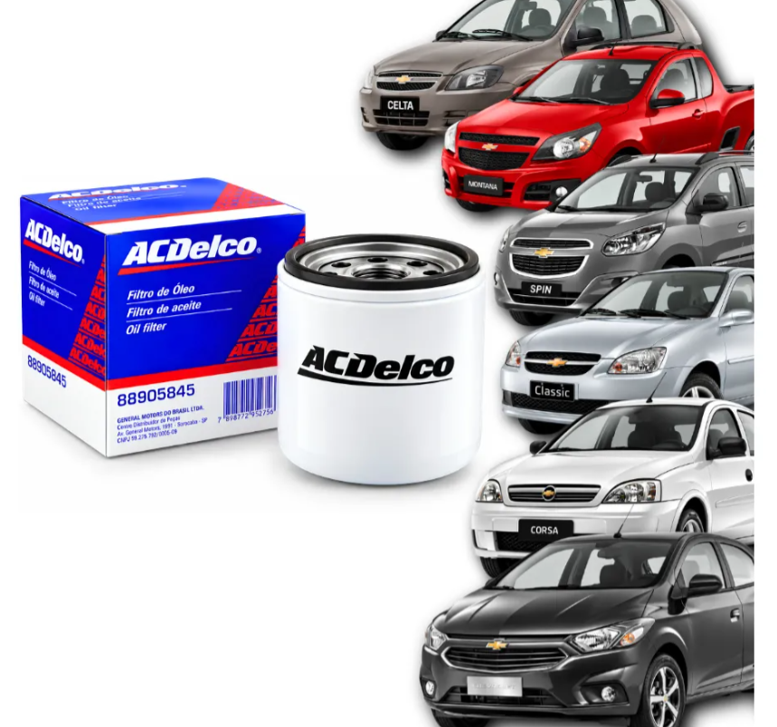
Filtro de óleo Prisma Celta Montana Onix Astra Meriva Vectra
R$ 25,99
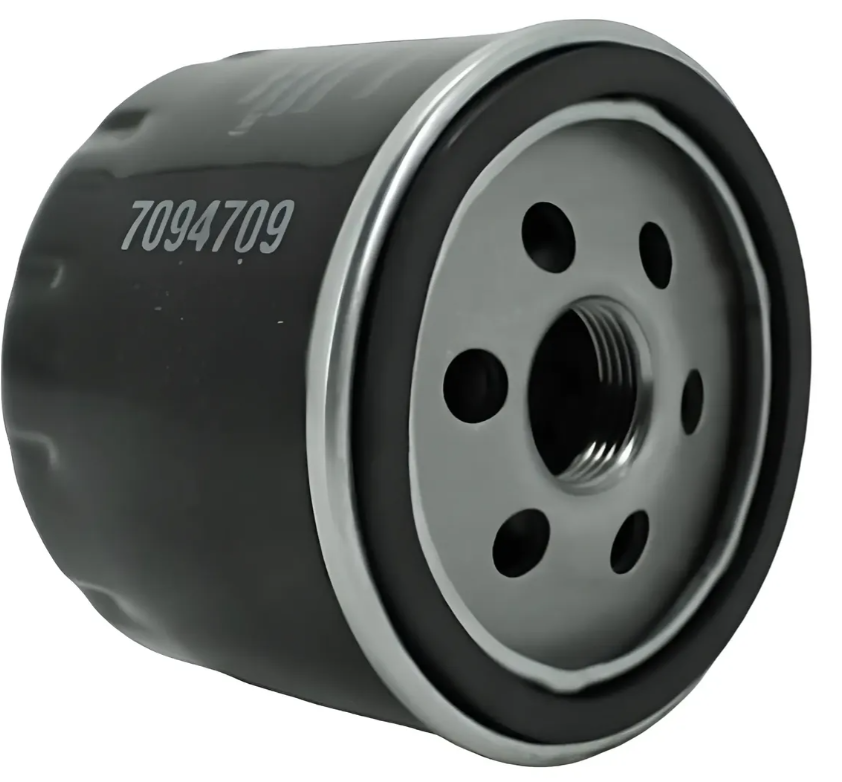
Filtro de óleo Argo Cronos Mobi Nova Strada Fiat 7094709
R$ 70,90
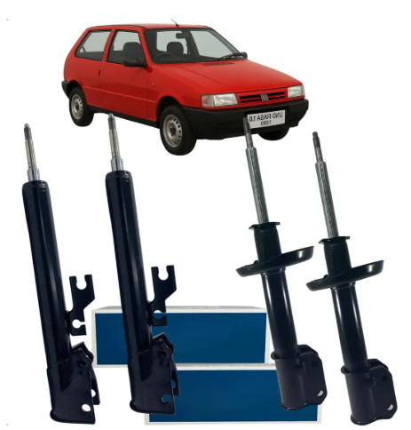
Kit amortecedor - Dianteiro e Traseiro - marca Nakata - Fiat Uno
R$ 995,99
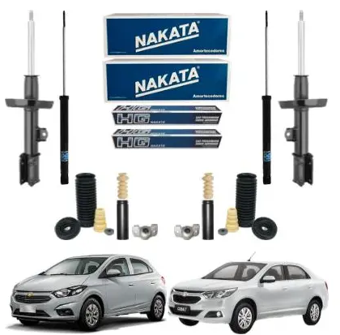
Kit amortecedor - Dianteiro e Traseiro - marca Nakata - Onix Prisma Cobalt
R$ 1.188,99
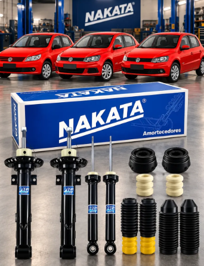
Kit amortecedor - Dianteiro e Traseiro - marca Nakata - Gol Voyage G5 G6 G7 + Kit Compressão
R$ 794,99
MAIS VENDIDO
G&D / LINHA MOTO
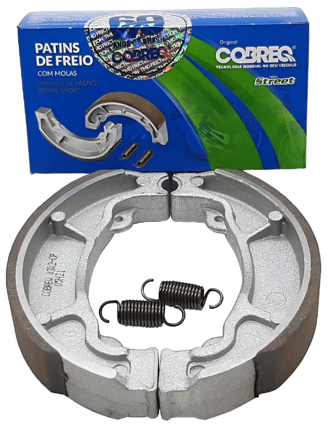
Kit Pastilha de Freio Dianteira + Lona / Patins de Freio Traseira - Fan/Titan 160 - ano 2018
R$ 53,00
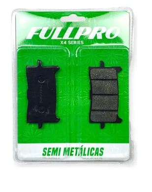
Pastilha Freio Dianteira - HONDA CB 650R / CBR 650 2020 - 2022
R$ 145,86
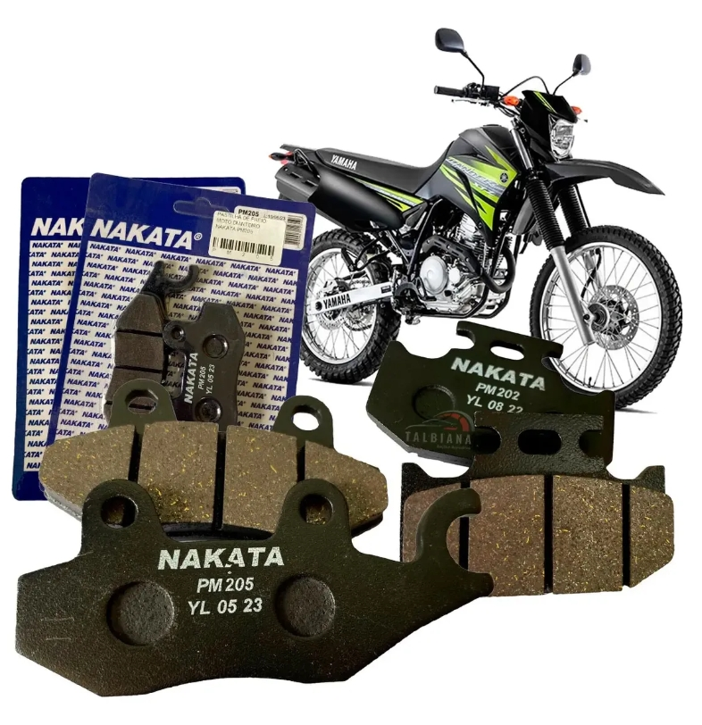
Lona Pastilha Freio - Biz 125 Ex 2025 2026 - Dianteiro e Traseiro
R$ 66,91
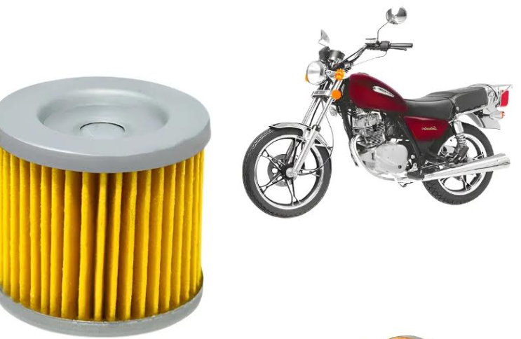
Filtro de Óleo Motor Suzuki com Anel Original
R$ 19,50
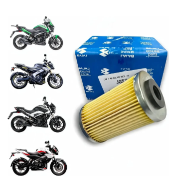
Filtro de Óleo do Motor Dominar 200 / 250 / 400 / NS400Z / Pulsar N150
R$ 61,89
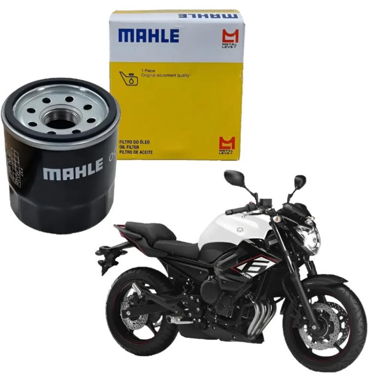
Filtro De Óleo Motor Yamaha Xj6 NF 600, Xj6n, Xj6f- 2010-2019
R$ 37,00
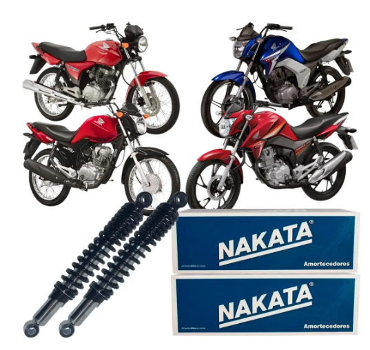
Par Amortecedor Suspensão Traseira Cg 150/160 e Cg 160 Titan
R$ 179,50
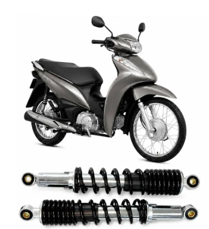
Par Amortecedor Traseiro Biz 125 - 2011 a 2022
R$ 119,99
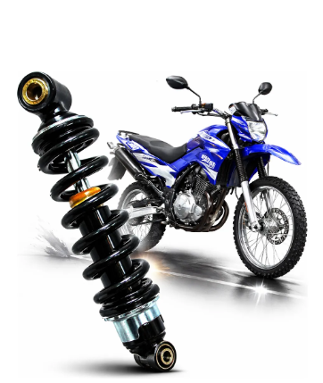
Amortecedor Traseiro Lander 250 - 2007 a 2022
R$ 239,90